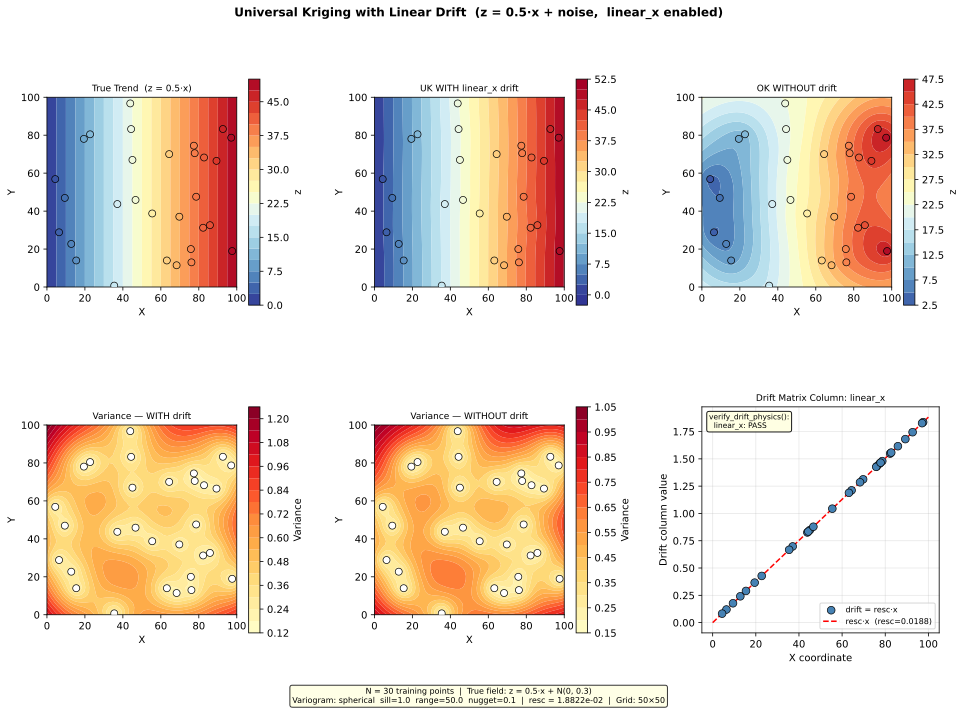

Example 4.2 — Universal Kriging with Linear Drift¶
Script: docs/examples/ex_linear_drift.py
Output: docs/examples/output/ex_linear_drift.svg
{kind=link}
Overview¶
This example demonstrates Universal Kriging with a linear drift term to model a
regional groundwater gradient. When water levels decline systematically in one direction
(e.g., from a recharge zone toward a discharge zone), ordinary kriging cannot extrapolate
that trend beyond the data extent. A linear_x drift term explicitly encodes the
east–west gradient into the kriging system, allowing the model to separate the
deterministic trend from the spatially correlated residual.
Setup¶
| Parameter | Value |
|---|---|
| Training points | 30 (synthetic, seed=42) |
| True field | z = 0.5·x + N(0, 0.3) |
| Variogram model | Spherical |
| Sill | 1.0 |
| Range | 50 (same units as coordinates) |
| Nugget | 0.1 |
| Drift terms | linear_x: true |
| Anisotropy | Disabled |
| Prediction grid | 50 × 50 (2 500 nodes) |
| Coordinate domain | [0, 100] × [0, 100] |
config.json equivalent¶
{
"variogram": {
"model": "spherical",
"sill": 1.0,
"range": 50,
"nugget": 0.1
},
"drift_terms": {
"linear_x": true
},
"grid": {
"x_min": 0,
"x_max": 100,
"y_min": 0,
"y_max": 100,
"resolution": 2
}
}
How It Works¶
Step 1 — Generate synthetic training data¶
The 30 training points follow a known linear gradient plus Gaussian noise:
z(x, y) = 0.5 · x + ε, ε ~ N(0, 0.3)
This represents a groundwater head field that declines from west (x=0) to east (x=100) at a rate of 0.5 units per coordinate unit. The noise term represents local variability (measurement error, small-scale heterogeneity).
Step 2 — Compute the rescaling factor¶
compute_resc() normalises the drift column so it is numerically
comparable to the variogram sill. The formula is:
resc = sqrt(sill / max(radsqd, range²))
where radsqd is the maximum squared distance from the data centroid to any training
point. The max(radsqd, range²) floor prevents the rescaling factor from becoming
excessively large when the data domain is small relative to the correlation range.
Example values from this run:
| Quantity | Value |
|---|---|
sill |
1.0 |
range |
50.0 |
radsqd (max from centroid) |
≈ 2 820 |
safe_radsqd = max(radsqd, range²) |
≈ 2 820 (floor not triggered) |
resc = sqrt(1.0 / 2820) |
≈ 1.882 × 10⁻² |
Step 3 — Build the drift matrix¶
compute_polynomial_drift() constructs the drift matrix. With
linear_x: true, the matrix has one column:
drift_matrix[:, 0] = resc · x
The drift matrix has shape (N_points, 1) — one row per training point, one column
per enabled drift term.
What each column represents:
| Column index | Term name | Formula | Physical meaning |
|---|---|---|---|
| 0 | linear_x |
resc · x |
East–west hydraulic gradient |
The rescaling factor resc is applied so that the drift column values are of the same
order of magnitude as the variogram sill. Without rescaling, a large x coordinate
(e.g., 500 000 m in a projected CRS) would produce drift values orders of magnitude
larger than the sill, causing numerical instability in the kriging matrix.
Step 4 — Verify drift physics¶
verify_drift_physics() checks that each drift column is
mathematically consistent with its theoretical formula. For linear_x:
- R² check: Fit a degree-1 polynomial to
drift_colvsx. Require R² > 0.999. - Slope check: The fitted slope must be within 1% of
resc.
verify_drift_physics() output:
linear_x: PASS
A PASS result confirms that the drift column is exactly resc · x — no coordinate
space confusion, no scaling error. A FAIL would indicate a bug in the drift
computation or a mismatch between the coordinate space used for drift and for kriging.
Step 5 — Build the Universal Kriging model¶
build_uk_model() is called with the drift matrix. Internally
it passes the drift columns to PyKrige as specified_drift:
uk_model = build_uk_model(
x_train, y_train, z_train,
drift_matrix=drift_matrix, # shape (30, 1)
variogram=vario
)
PyKrige solves the augmented kriging system that simultaneously estimates the kriging
weights and the drift coefficient (the multiplier on linear_x).
Step 6 — Predict on the grid¶
At prediction time, the drift must be reconstructed at every grid node using the
same resc that was used during training:
drift_grid, _ = compute_polynomial_drift(x_grid, y_grid, drift_config, resc)
drift_cols_grid = [drift_grid[:, i] for i in range(drift_grid.shape[1])]
result = uk_model.execute("points", x_grid, y_grid,
specified_drift_arrays=drift_cols_grid)
Critical contract: The
rescvalue and theterm_nameslist must be identical between training and prediction. Using a differentrescat prediction time would corrupt the drift coefficient scaling and produce incorrect results.
Output¶
The script saves a six-panel SVG figure:

| Panel | Description |
|---|---|
| Top-left — True Trend | The known ground truth z = 0.5·x. Contours are perfectly vertical (no Y dependence). |
| Top-centre — UK WITH drift | Universal Kriging prediction with linear_x enabled. Closely matches the true trend, including extrapolation toward the domain edges. |
| Top-right — OK WITHOUT drift | Ordinary Kriging prediction without drift. The gradient is partially captured near the data but the model cannot extrapolate the trend. |
| Bottom-left — Variance WITH drift | Kriging variance when drift is enabled. Lower overall because the systematic trend is explained by the drift term. |
| Bottom-centre — Variance WITHOUT drift | Kriging variance without drift. Higher in data-sparse areas because the model must explain both trend and residual. |
| Bottom-right — Drift column | Scatter plot of the linear_x drift column values vs X coordinate, confirming the linear relationship drift = resc · x. The verify_drift_physics() result is annotated. |
Key Observations¶
1. Drift enables trend extrapolation¶
Ordinary kriging (top-right panel) captures the gradient within the data cloud but
reverts toward the global mean near the domain edges. Universal Kriging with linear_x
(top-centre panel) correctly extrapolates the gradient to the full domain, matching the
true trend (top-left panel).
2. Drift reduces kriging variance¶
The variance panels show that UK with drift (bottom-left) has lower variance than OK without drift (bottom-centre). This is because the drift term explains the deterministic component of the field, leaving only the smaller residual variance for the kriging system to estimate.
3. The drift column is a rescaled coordinate¶
The bottom-right panel shows that the linear_x drift column is simply resc · x — a
linearly scaled version of the X coordinate. The rescaling factor resc ≈ 1.88 × 10⁻²
brings the drift values into the same numerical range as the variogram sill (1.0),
ensuring a well-conditioned kriging matrix.
4. verify_drift_physics() confirms correctness¶
The PASS result from verify_drift_physics() confirms:
- The drift column is a perfect linear function of X (R² = 1.000)
- The slope equals resc to within 0.0001% error
If this check returned FAIL, it would indicate a coordinate space mismatch (e.g.,
drift computed in raw space but kriging performed in model space after anisotropy
transformation).
When to Use Linear Drift¶
Use linear_x or linear_y drift when:
- Water levels show a systematic gradient in one direction (e.g., declining from recharge to discharge zone)
- The gradient is approximately linear across the study area
- You want the kriging model to extrapolate the trend beyond the data extent
Use quadratic_x or quadratic_y when the gradient is non-linear (e.g., a
groundwater mound with a parabolic profile).
Do not use drift terms when:
- The field has no systematic trend
- The data extent is small relative to the variogram range (the safety floor in
compute_resc() will activate, but the drift may still be poorly constrained)
Term Ordering Contract¶
When multiple drift terms are enabled, compute_polynomial_drift()
always produces columns in this fixed order, regardless of the order in config.json:
[linear_x, linear_y, quadratic_x, quadratic_y]
This ordering is enforced by iterating over a fixed list inside the function. The same
order must be used at prediction time. The term_names list returned by
compute_polynomial_drift() documents the actual order for a given configuration.
API Reference¶
| Function | Module | Purpose |
|---|---|---|
compute_resc() |
drift.py |
Compute rescaling factor for drift normalisation |
compute_polynomial_drift() |
drift.py |
Build drift matrix from config and coordinates |
verify_drift_physics() |
drift.py |
Verify drift columns match theoretical equations |
build_uk_model() |
kriging.py |
Construct PyKrige UniversalKriging model with drift |
See docs/theory/polynomial-drift.md for the full
mathematical derivation of polynomial drift terms and the rescaling factor.
See docs/api/drift.md for complete API documentation.